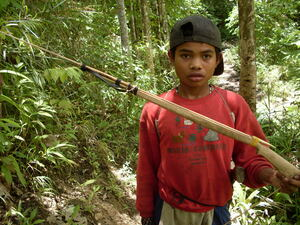

bitik 
/bitik/
v_rt.
“stretch_out_rubber”
n.
a spear-gun (used for catching small fish)
Cult. Has a wooden handle and a trigger which releases a small bamboo or wire arrow, propelled by strips of rubber.
O. Syn. timbesut
Eng. spear-gun; gun, spear
Online dict status: -
Usage level: M
vt.
for someone (egbitik, migbitik/imbitik, egbibitik, imbibitik/migbibitik, bibitik, agent, eg><ø-, eg><ø-rdpCV-) to shoot someone or something else (egbitiken, imbitik/migbitik/pigbitek, biteka, theme, eg><en-) with a stretched rubber band
Eng. shot with rubber band
Ceb. bítik
Online dict status: -
Usage level: M
vi.
for someone or something (egkabitik, nabitik, actor, egkA><ø-) to be hit by someone releasing a stretched rubber band (igbitik, igpamitik, instrument, ig><ø-, ig-pA-) something (e.g. string) to use to mark a straight line, e.g. on a piece of timber about to be cut
Igbitik ku seini te kayu te seini ne kalayatan.
I will stretch out this on a piece of wood to this length.
Eng. make straight line; hit with rubber band
Online dict status: -
Usage level: R
Updated by: RJH,RAA,QDL
Last updated: 01/Jun/2010
This page last updated: 19/May/2012
Copyright © 2009-2010, Matigsalug Language Christian Association, Inc